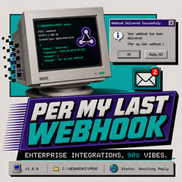
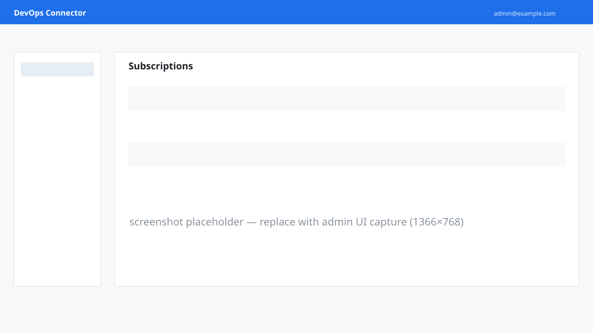

Seven CI platforms
Jenkins, GitHub Actions, GitLab CI, Azure Pipelines, Buildkite, CircleCI, and Bitbucket Pipelines, normalized to one common event model. Add another platform by writing one adapter.

Per My Last WebhookA drop-in replacement for the deprecated Office 365 Connectors. Normalize webhook events from seven CI platforms into one Teams app, with rate limiting, retries, and an audit trail.
Multi-tenant Entra OAuth · audit log · per-org rate limits · encrypted secrets at rest
Jenkins, GitHub Actions, GitLab CI, Azure Pipelines, Buildkite, CircleCI, and Bitbucket Pipelines, normalized to one common event model. Add another platform by writing one adapter.
Stateless Teams Workflows webhooks, or the Bot Framework with
in-place card updates so one card flips
started → success rather than spawning two.
Microsoft Entra Bearer tokens on the management plane. Admin-consent install flow with HMAC-signed state. Per-tenant isolation enforced at the data layer, not the UI.
Post an Approve / Reject card to a channel and pause the pipeline until a human clicks. Decisions are idempotent and audit-logged with the decider's UPN.
Per-organization token-bucket rate limits with optional Redis for accurate multi-instance throttling. Exponential-backoff retries on transient Teams 5xx. Honest 207 responses on partial fan-out.
Every mutation lands in a 90-day TTL'd audit log with actor UPN, source IP, and target entity. Browse it in the admin UI or fetch via the API.
A Microsoft 365 admin grants tenant-wide consent. The
installations record is created; users in the tenant
can now manage subscriptions.
Pick a channel, paste a Teams Workflows webhook URL, choose a CI
platform. We hand you a per-subscription
ingestUrl with auth baked into the path.
Use your platform's native webhook UI. No relay, no plugin, no deploy. Events start flowing immediately; the Test button verifies end-to-end in one click.
Free and open source to self-host. Or let us run the whole thing.
High-volume senders are welcome — the Managed plan includes generous fair-use, and truly high-throughput tenants move to Enterprise for dedicated capacity and volume pricing.
A small React + MSAL SPA the Function App serves at
/api/ui/. Light or dark, subscription CRUD, approval
inbox, audit log, billing.

The simplest path is the Teams Store listing. If you'd rather self-host, the source is on GitHub with Bicep templates that stand up the full Azure footprint (Functions, Cosmos, Key Vault, Application Insights) and a smoke-gated CI release path.
git clone {{GITHUB_URL}}
cd teams-devops-connector
./infra/deploy.ps1 -ResourceGroup my-rg -Location eastus \
-BaseName mytdc -Environment devSelf-hosting is fully supported and there is no licence fee for it. The hosted plan only adds managed infrastructure, billing, and a status page.
Microsoft deprecated the Office 365 Connectors for Microsoft Teams. Existing connectors stop working in 2025; new ones cannot be created. This service is the replacement.
Teams Workflows webhook URLs are stored encrypted in Azure Key Vault. The management plane requires Entra Bearer tokens. Audit entries record every mutation. See the Privacy Policy for the full picture.
Anything that includes Teams and lets the tenant admin grant application consent. Most Business and Enterprise SKUs qualify.
Yes. The admin UI uses MSAL against your tenant's Entra ID; users sign in with their existing Microsoft 365 account.
Yes. The entire codebase is open. Bicep templates and a deploy script stand up the full Azure footprint in one command.
Private-network ingestion, more delivery channels (Slack, Discord), and richer per-subscription branding. See the GitHub repository for the current backlog.